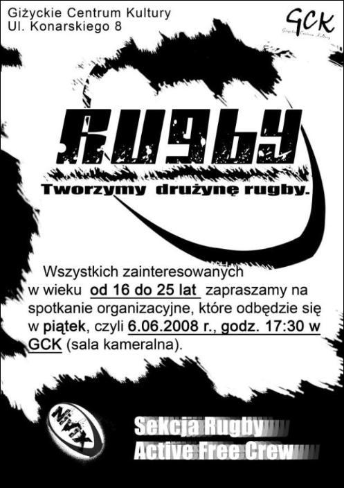

Początki
Pomysł na stworzenie w Giżycku drużyny rugby "7" narodził się już parę miesięcy temu. Kilka dni przed 6 czerwca, gdy plakaty z informacją o naborze do sekcji pojawiły się w mieście i szkołach klamka o powołaniu jej do życia zapadła. Plany zostały wdrążone w życie, bowiem właśnie 6 czerwca odbyło się w Giżyckim Centrum Kultury zebranie organizacyjne. Pomysłodawcą i jednocześnie pierwszym trenerem zespołu jest Michał Walerowicz - uczeń 1 LO w Giżycku. Podjął się dużego wyzwania, jakim jest prowadzenie drużyny z posiadaniem jedynie wiedzy teoretycznej.

Pierwsze zebranie
Na spotkaniu organizacyjnym zjawiło się 14 osób. Uzgodniony został termin pierwszego treningu, który odbył się 10 czerwca na stadionie MOSiR. Na pierwszym "sprawdzianie kondycyjnym" (po którym kilka osób niestety odpadło) zostały ustalone terminy przyszłych treningów oraz kilka spraw formalnych.
Formalizacja sekcji
Nowa sekcja działała wówczas w stowarzyszeniu AFC (Active Free Crew). Po podjęciu uchwały o stworzeniu sekcji w stowarzyszeniu przestaliśmy być grupką znajomych, która rekreacyjnie bawi się w rugby. W niedługim czasie nastąpiło uruchomienie strony internetowej drużyny, co umożliwiło również reklamę. W między czasie część zawodników się wykruszyła, pojawili się również nowi - zaczęła się jednak formować stała grupa chłopaków uczęszczających regularnie na treningi.
Współpraca z WMPD PUDiZ Olsztyn
Dzięki zaangażowaniu Justyny Nierwińskiej został nawiązany kontakt z pierwszoligową drużyną WMPD PUDiZ Olsztyn. Na stronie Olsztyńskiego klubu ukazała się wiadomość o zauważeniu naszej działalności i chęci pomocy ze strony olsztyńskiego klubu dla naszej drużyny. Niedługo potem zaaranżowanie zostało spotkanie z trenerem Olsztyńskiego klubu, panem Leszkiem Borsem. Odbyło się 26 czerwca na stadionie MOSiRu. Zobaczyliśmy, jak wygląda trening z prawdziwego zdarzenia, nabyliśmy nowych doświadczeń dzięki pracy z doświadczonym trenerem. Po zakończonym spotkaniu dostaliśmy 5 piłek od pana Leszka, a M. Walerowicz jako trener Giżyckich otrzymał przydatne w szkoleniach materiały pomocnicze.
Rozgłos
Informacje o spotkaniu opisane zostały w Gazecie Giżyckiej oraz Gazecie Olsztyńskiej. Artykuł z GO ukazał się również na stronie klubu z Olsztyna.
Współpracy ciąg dalszy
5 lipca wybraliśmy się do Olsztyna, skąd trenerzy pierwszoligowca- P. Leszek Bors i Krzysztof Olsiński przetransportowali nas do Gągławek, gdzie rozegraliśmy nasz pierwszy mecz sparingowy z okazji 650-lecia tejże miejscowości. To było pierwsze, lecz nie ostatnie takie spotkanie. Niedługo rozegramy następne-tym razem w Giżycku. Koledzy z Olsztyna okazali się bardzo życzliwi i udzielali pomocnych wskazówek podczas gry. Żaden trening nie jest w stanie dać tyle, co gra.
Klub z prawdziwego zdarzenia
Obecnie, dzięki uprzejmości P. Andrzeja Paszkiewicza sekcja należy do Młodzieżowego Towarzystwa Sportowego. Do PZR zostało wysłane pismo z informacją o powstaniu drużyny. Teraz pozostało nam doskonalić swoje umiejętności i zgłębiać tajniki gry w rugby.
Jesteśmy w klubie! Po dwutygodniowej przerwie
Podczas dwutygodniowej przerwy w treningach zawodnicy mieli dostarczyć wszystkie potrzebne dane, które pozwolą na oficjalne wcielenie ich do klubu MTS Rugby Giżycko. W ten właśnie sposób nasza drużyna stała się jeszcze bardziej realna.
Czas na logo
Drużyna nareszcie posiada swoje własne logo, które będzie pojawiało się na naszych strojach i wszelkich dogodnych dla tego typu grafiki obiektach.
Poważny trening
Drugi trening, który sprawił, że nasz zapał do gry urósł jeszcze bardziej odbył się 13-go sierpnia. Kolejnym trenerem, który zgodził się poświęcić nam czas był selekcjoner kadry juniorów p. Maciej Misiak, który przebywał w Giżycku wraz ze swoją klubową drużyną MKS Orkan Sochaczew na obozie sportowym. Wraz, z p. Maciejem pojawił się. p. Jakub Seklecki - zawodnik Sochaczewa. Wszyscy do treningu podeszli bardzo poważnie. A wrażenia po? Uśmiech na twarzach mówił wszystko. Serdecznie dziękujemy Panom za ofiarowaną pomoc i przekazanie nam cząstki posiadanej wiedzy i umiejętności. Spożytkujemy ją jak najlepiej.